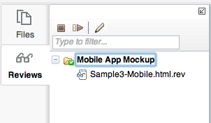

To create a new review session,
press on the "Create" menu and choose "Review...".
This will bring up a wizard with three sections:
General information - In this section,
you can provide a title for the review session, description,
and due date.
Select review files - In this section,
you pick which files from your workspace should be shared
with your colleagues for their review and feedback.
Add reviewers - In this section,
you provide the email addresses for all reviewers.
After clicking on the Publish button, the Maqetta server will
send email to all reviewers. The email will contain a hyperlink
that will take the reviewer to the Maqetta server so they can
open the review files and supply feedback.
Open menu
To open an existing review, you can either
press on the "Open" menu and choose "Review..." or double-click
on an entry in the Reviews palette.
File tabs
Listing of all currently open files.
Review files have file extension ".rev".
Message
The text within the yellow background explains that the pages opened within a Maqetta
review editor are live pages that actually run (i.e., you can click on controls and they will respond).
Top/left palettes
Files shows your file system in the cloud.
Reviews shows the list of review sessions which either you initiated
or to which you have been invited. (see image at right)

Comments palette
This Comments palette is where a user provides feedback
on a review. Reviewers can add a comment by clicking on the icon with the "+" symbol.
Reviewers can also reply to other peoples comments.
Reviewers can also add graphical annotations onto the canvas, using
either rectangles, ovals, arrows or text.
Scenes palette
The Scenes palette allows the reviewer to switch to different
named scenes within the application. Maqetta supports two forms of "scenes":
Application states - Maqetta includes an "application states" feature
which allows users to define interactivity without programming.
With the application states feature, you can organize your application into different states,
and then define which widgets are visible (or styled differently) in each different states.
State changes can be triggered using the Events palette.
Switching between Dojo Mobile Views - If you create a mobile application
and include Dojo Mobile view widgets (View, ScrollableView or SwapView) in your application,
the Scenes palette will show both the list of views, plus the hierarchy of views.
You can easily switch between views by clicking on one of the view in the Scenes palette.